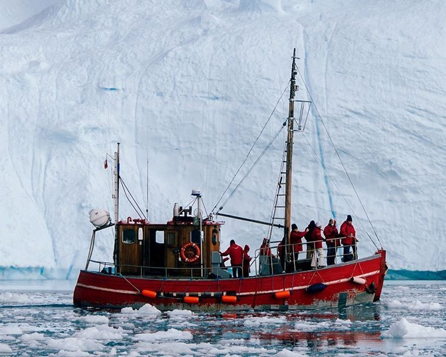
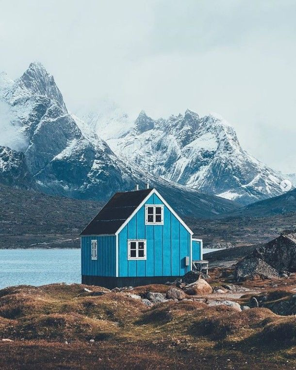
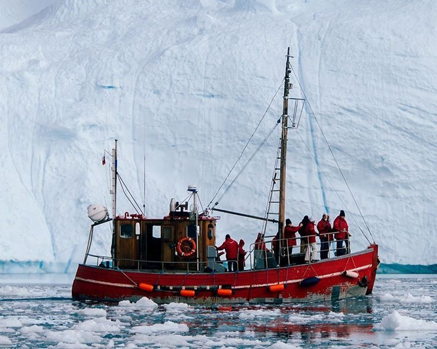
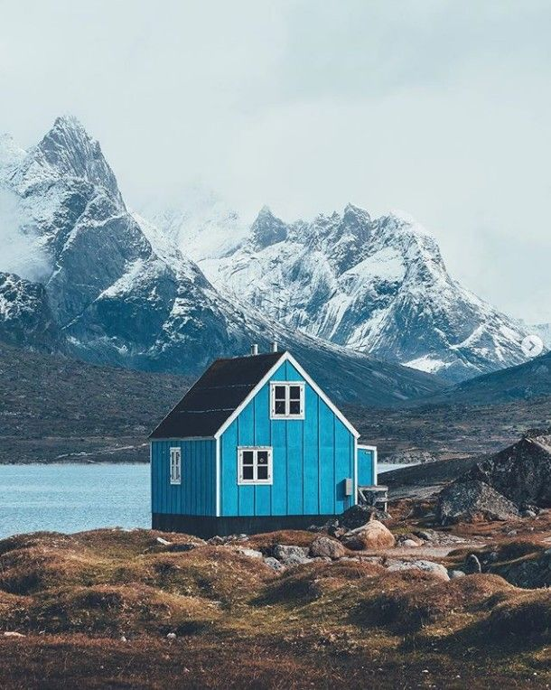
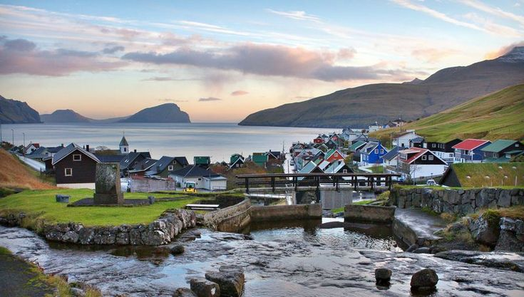
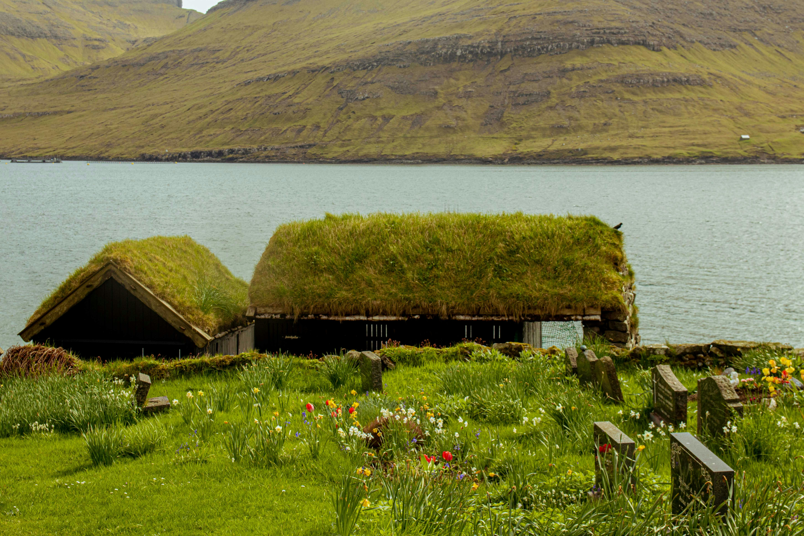
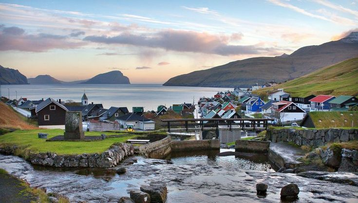
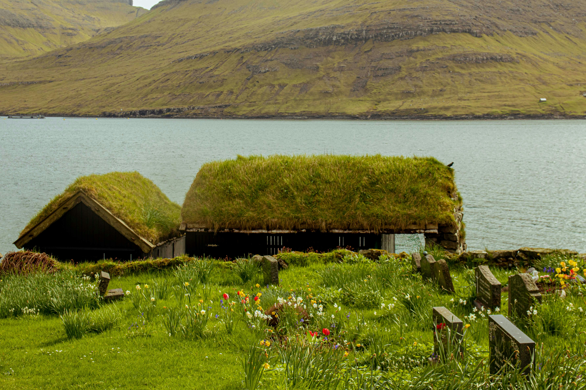

The Copenhagen Classic
Explore the vibrant Nyhavn waterfront, enjoy the magic of Tivoli Gardens, and taste world-class Nordic cuisine in the heart of the capital.
View Full Itinerary
Experience the true north with itineraries crafted by local experts. From Danish design cities to the raw wilderness of the Arctic.
Explore the vibrant Nyhavn waterfront, enjoy the magic of Tivoli Gardens, and taste world-class Nordic cuisine in the heart of the capital.
View Full Itinerary
Walk through history in Den Gamle By, experience the ARoS Art Museum's rainbow panorama, and discover the Moesgaard prehistory.
View Full Itinerary
Hike the dramatic White Cliffs, explore the ancient fossils at the GeoCenter, and gaze at the stars in Scandinavia's first Dark Sky Park.
View Full Itinerary
Build your dreams at LEGO House, experience the thrills of LEGOLAND, and go on a wild safari at Givskud Zoo.
View Full ItineraryThe Danish Realm extends far into the North Atlantic. Explore the remote wonders of Greenland and the Faroe Islands.
 



The world's largest island, where icebergs the size of buildings drift past colorful villages. Experience dog sledding, witness the Northern Lights, and explore Inuit culture.
18 volcanic islands where dramatic cliffs meet grass-roofed villages. A paradise for hikers, birdwatchers, and those seeking untouched Nordic landscapes.
 


